Custom Sample Challenge - Zero2Automated
Introduction
In this post, I will examine the sample provided in the Zero2Automated: Advanced Malware Analysis course,
which is introduced when we reach the third chapter of the course. That said, let's get started.
The scenario is the following:
During an ongoing investigation, one of our IR team members managed to locate an unknown sample on an infected machine belonging to one of our clients. We cannot pass that sample onto you currently as we are still analyzing it to determine what data was exfiltrated. However, one of our backend analysts developed a YARA rule based on the malware packer, and we were able to locate a similar binary that seemed to be an earlier version of the sample we're dealing with. Would you be able to take a look at it? We're all hands on deck here, dealing with this situation, and so we are unable to take a look at it ourselves. We're not too sure how much the binary has changed, though developing some automation tools might be a good idea, in case the threat actors behind it start utilizing something like Cutwail to push their samples. I have uploaded the sample alongside this email.
Thanks, and Good Luck!
Static Analysis
Opening the sample with PE Studio allows us to obtain several useful pieces of information about the binary. The first things that can be noticed are that the file is compiled as a 32-bit executable and that it has a high entropy value (7.434). This high entropy may indicate that parts of the file are packed or encrypted.
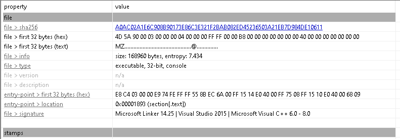
By looking at the Optional Header, it is possible to see that the Image Base is located at 0x400000 and the Entry Point is at the offset 0x1893. The entry point is located inside the .text section.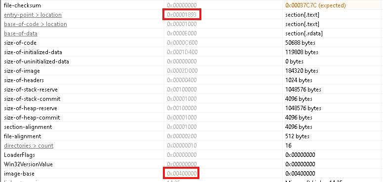
By analyzing the sections, it is possible to notice that the .text section has an entropy of 6.610, while the .rsrc section has an entropy of 7.994. This suggests that the .rsrc section may contain obfuscated or packed data, while the .text section could include cryptographic operations.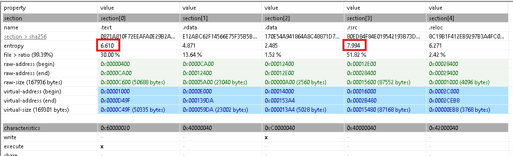
In fact, in the Resources section we can see a resource called rcdata. Looking at the first 32 bytes, we can notice that the data appears to be obfuscated.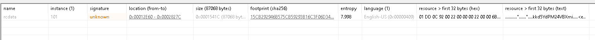
In the Libraries section, there is only one library imported: kernel32.dll.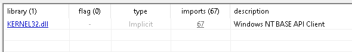
In the Imports section, many APIs from kernel32.dll are imported. In particular, LoadLibraryA and GetProcAddress are used to load other libraries and resolve functions at runtime.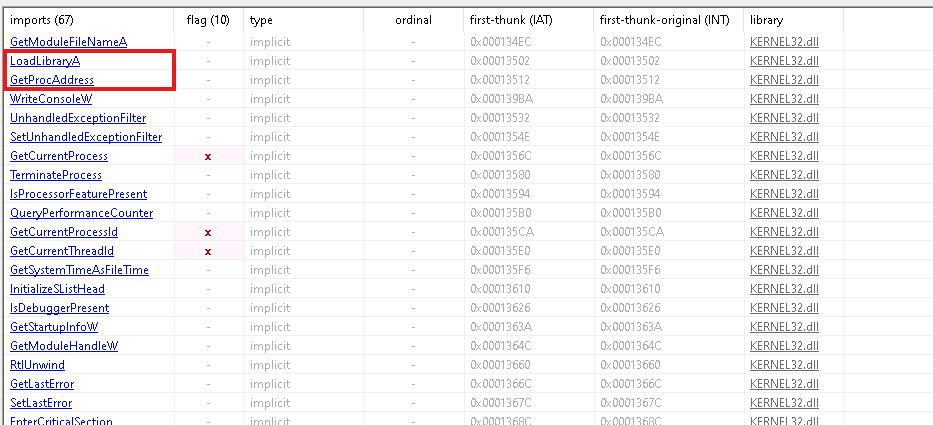
Also in the Strings section there are many unusual strings, which suggests that some form of encryption or obfuscation is being used.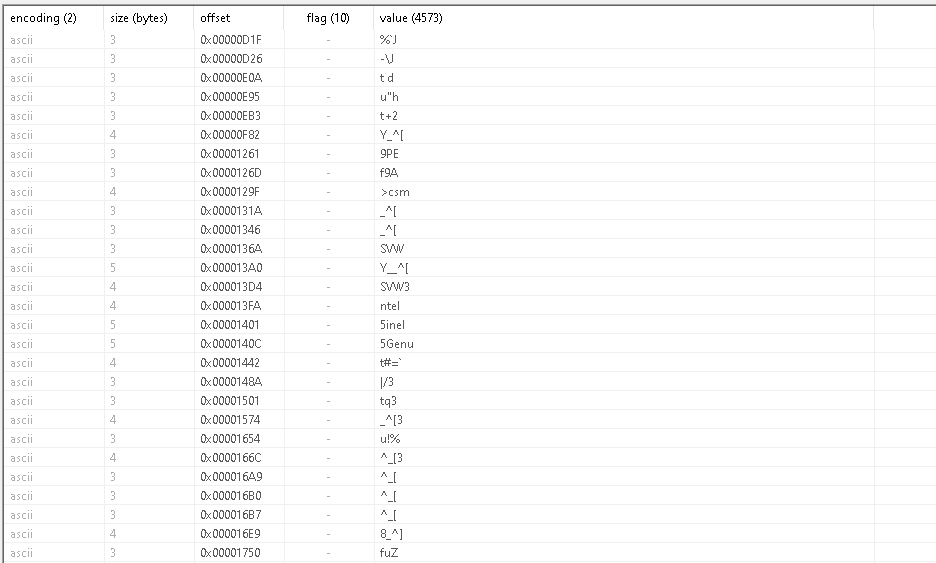
Static Analysis with IDA
Opening the sample in IDA redirects us to the main function, which appears as shown in the figure below. It can be observed that there are multiple calls to
sub_D41300, each receiving obfuscated strings as input. These strings are then passed as arguments to LoadLibraryA and
GetProcAddress.
This indicates that the obfuscated strings correspond to the library name and the function name associated with that library, respectively, which are resolved at runtime.
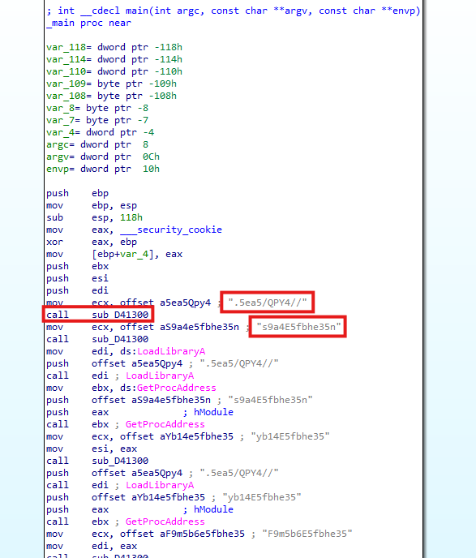
By checking the Xrefs, it is possible to see how many times this function is called throughout the code, along with all the corresponding offsets.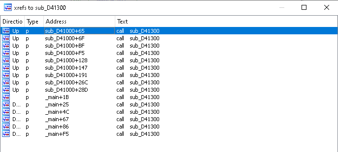
The figure below shows the function sub_D41300. Let's try to understand how this function works to decrypt the strings. It can be observed that the code first checks whether the input string length is greater than 0. If so, an alphabet is loaded into v12, and its length is determined. Then, an if-else statement is used to select the correct character from the alphabet, which is subsequently used to replace the corresponding character in the string being decrypted.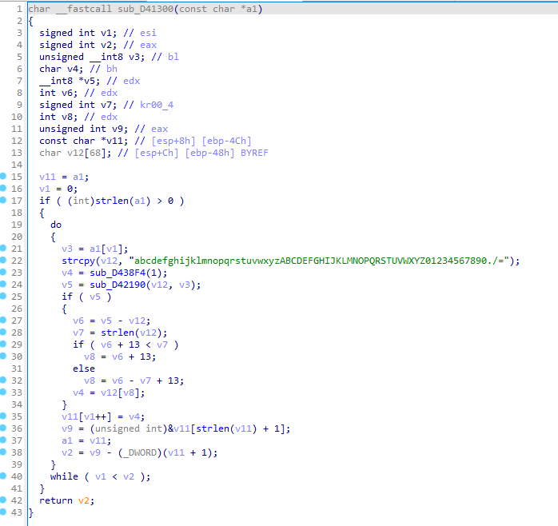
With this information, we can write a small Python script to automatically decrypt all the obfuscated strings. The code is shown below.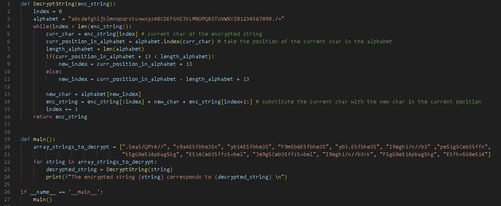
The image below, instead, shows the output of the Python script.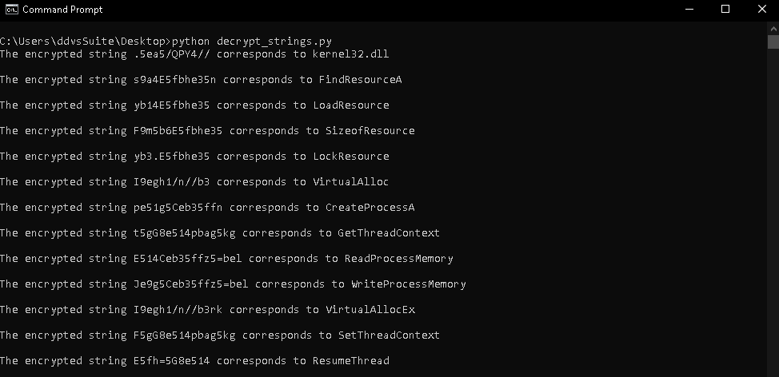
I also implemented the same logic using C programming language.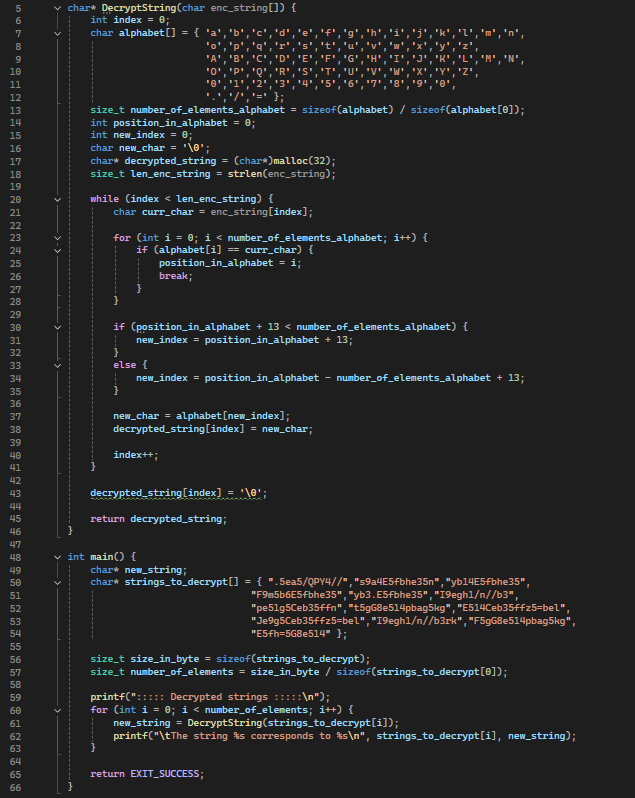
The corresponding output is shown in the figure below.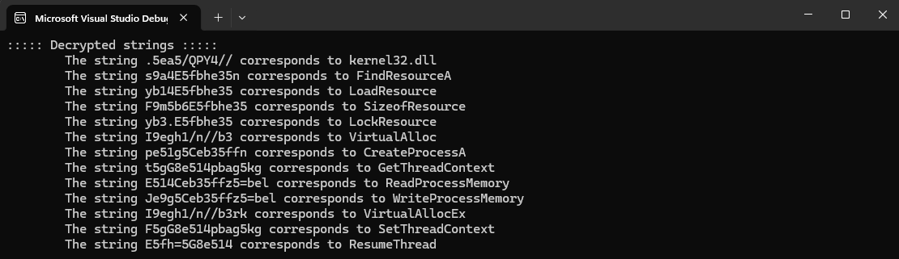
It can be observed that the sample dynamically loads kernel32.dll at runtime, resolving functions such as FindResourceA, LoadResource, SizeofResource, and LockResource. This behavior could have been anticipated, as we previously noticed in PE Studio that the Resources section contains unusual data. These functions are specifically used to extract and access such resource data, which may indicate the presence of a second-stage payload embedded within the resources.Now we can rename all the functions we have decrypted in order to make the code clearer and easier to understand.
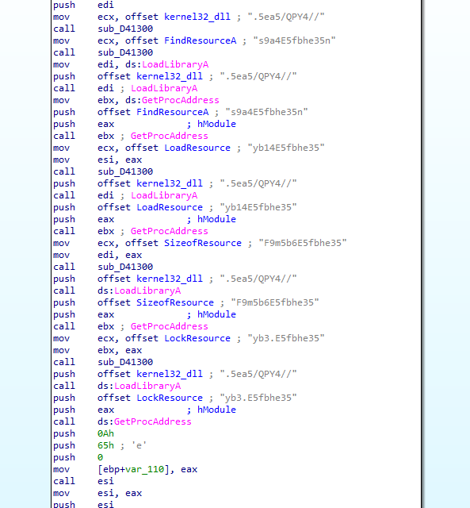
Going further down in the code, the following code snippet can be observed, which shows a familiar pattern. It is possible to observe a first loop that iterates 0x100 (256) times, followed by a second loop that also iterates 0x100 times. From this, it can be inferred that the following code snippet corresponds to the initialization stage of the RC4 algorithm. The first loop initializes the substitution box (S-box) with values ranging from 0x00 to 0xFF. The second loop is then used for the key scheduling, swapping values inside the S-box based on the key in order to prepare the keystream used during the encryption or decryption process.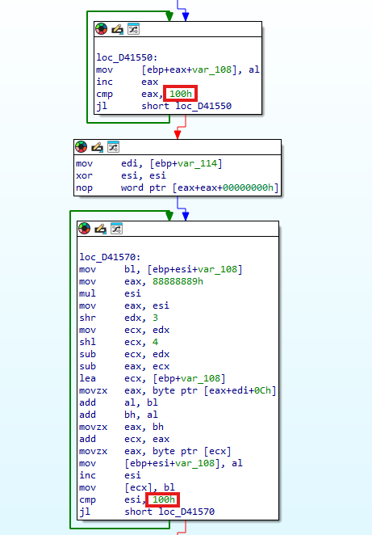
After this part of the code, the final stage of the RC4 algorithm can be observed, which is the XOR stage. A loop performs the XOR operation between the generated keystream and the input data. This loop is iterated as many times as the length of the payload that needs to be decrypted, this information can be found in esi register beacause this register is incremented by one at each iteration. As can be seen from the code, several operations are performed on var_108, after which the byte pointed to in the current iteration is moved into eax. This value is then used to perform the decryption through the XOR operation. Therefore, var_108 represents the key.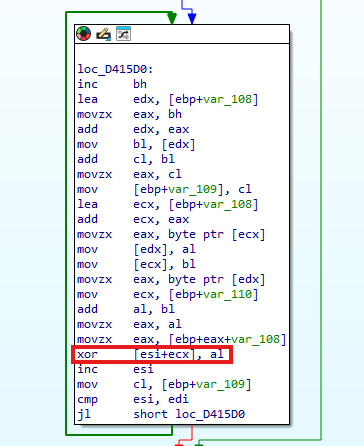
After this decryption, the malware calls the function sub_CB1000, passing var_110 as an argument. It could contain the decrypted payload.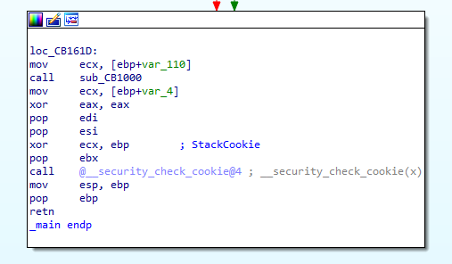
Inside this function, several Windows APIs are deobfuscated, including CreateProcessA. After that, the call to CreateProcessA (via call eax) can be observed. It is also possible to notice that the argument corresponding to dwCreationFlags is set to 0x4. This means that the process (whose handle is stored in ECX) will be created in a suspended state.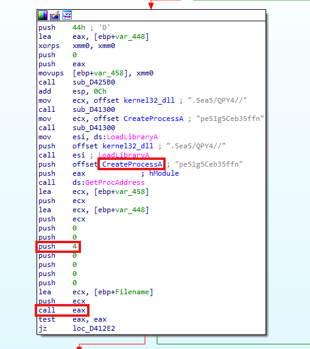
The sample then call VirtualAlloc to allocate a region of memory to itself with read and write permissions. The result of the VirtualAlloc is the base address of the memory allocated. This base address is passed as an argument to the GetThreadContext function.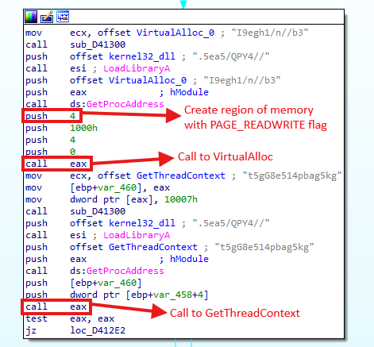
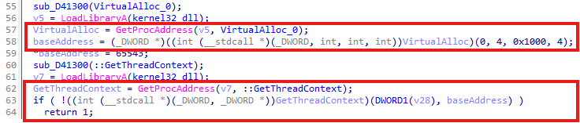
Then the malware calls WriteProcessMemory to write something in this region of memory.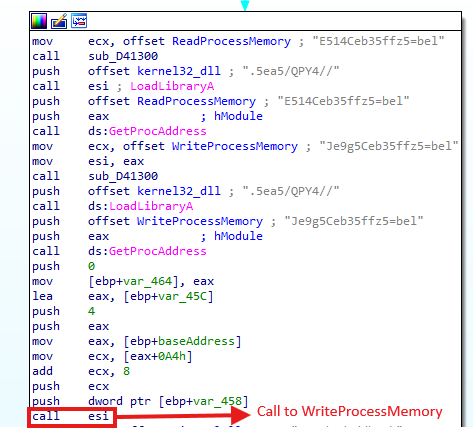
After executing this activity, the sample calls VirtualAllocEx, likely in order to execute the second stage through a remote process injection technique.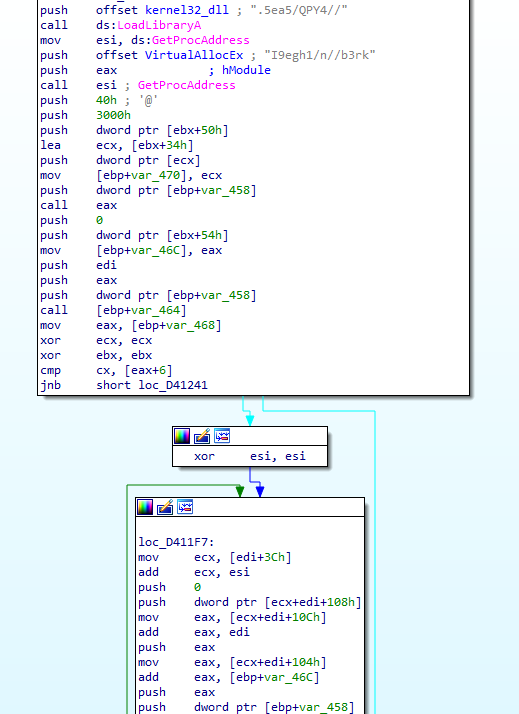
Finally, the sample calls SetThreadContext to modify the context of the thread, and then ResumeThread to resume and execute the thread.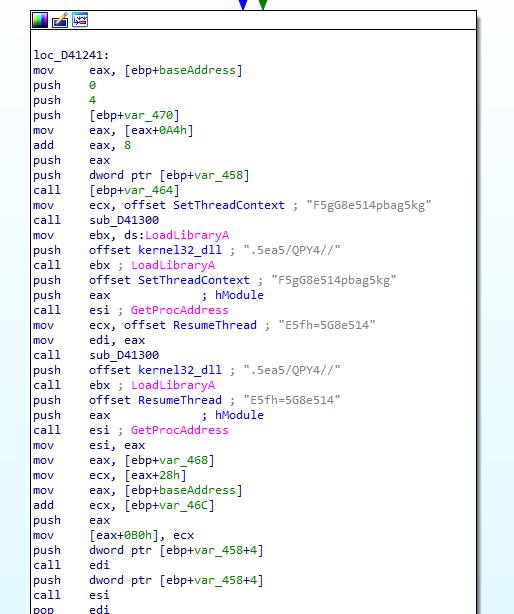
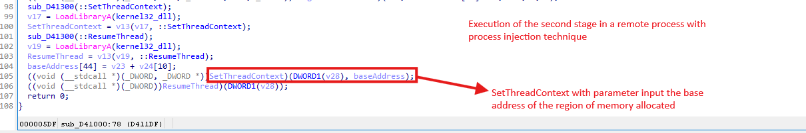
Dynamic Analysis
By moving to xdbg, it is possible to set several breakpoints on the Windows APIs that were previously identified during the static analysis with IDA, such as VirtualAlloc, VirtualAllocEx, WriteProcessMemory, and CreateProcessA.
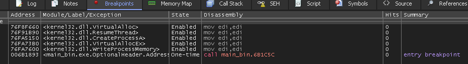
The first breakpoint is reached at VirtualAlloc, where it is possible to observe that the sample allocates 0x15400 bytes of memory. This memory region is allocated starting at the address 0xB50000.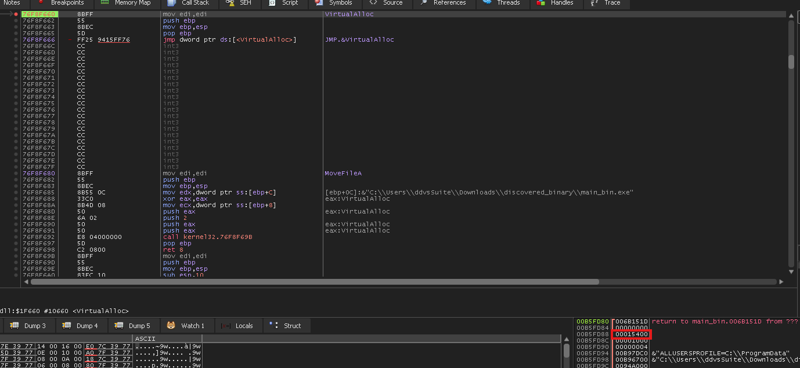
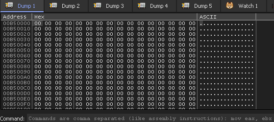
After this, the sample performs the decryption of the payload, as previously observed in IDA, using the RC4 algorithm. The decrypted data is written into the memory region that was previously allocated with VirtualAlloc.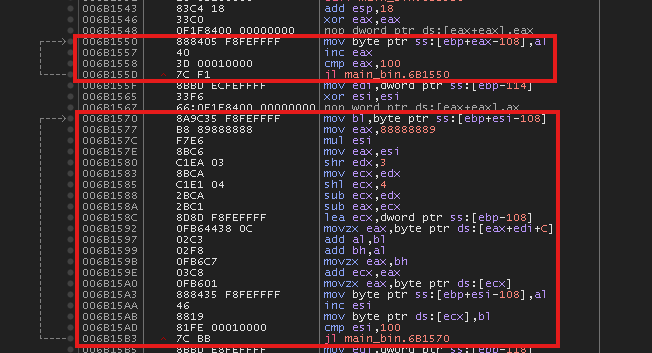
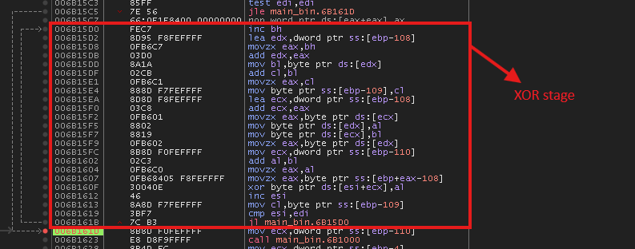
After that, in the memory dump we can see that a payload has been decrypted, which essentially corresponds to a PE executable.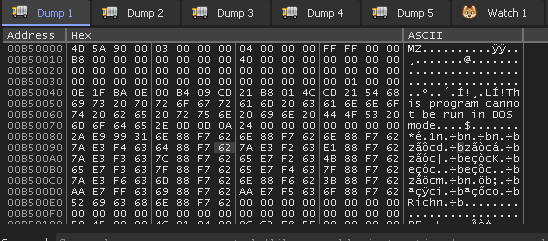
At the next breakpoint, the execution stops at CreateProcessA. Here it is possible to observe two important parameters: lpApplicationName, which contains the path of the sample itself, and dwCreationFlags, which is set to 0x4 (CREATE_SUSPENDED).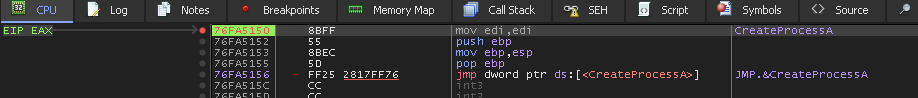
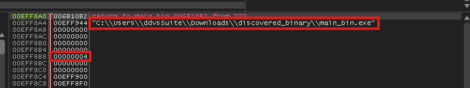
When the CreateProcessA has been executed, we can see this new process spawned.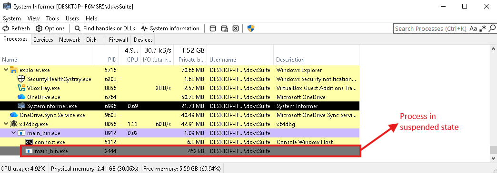
The next breakpoint is reached at VirtualAllocEx. Here, the malware allocates a region of memory inside the remote process.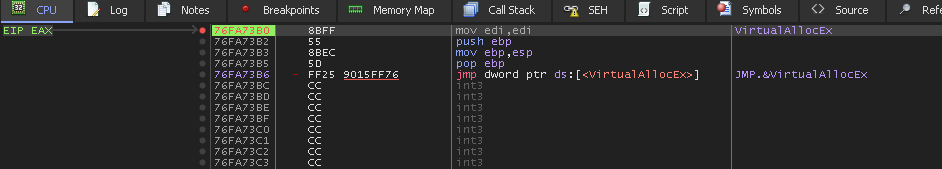
It is very interesting to observe the parameters in the stack before the execution of the function. The picture below shows the parameters passed to the function. the first is 0x110 which is the process handle that received this allocation. Then the second is the desired starting address for the region of pages that the process allocate which is 0x400000. Then the third parameter is the size of the region of memory to allocate, in this case the sample allocates 0x18000 bytes.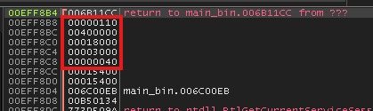
By looking at the handles of the current process, it is possible to observe that the value 0x110 corresponds to the child process that was previously created in a suspended state. This confirms that the malware is now interacting with that process in order to allocate memory and inject the payload into it.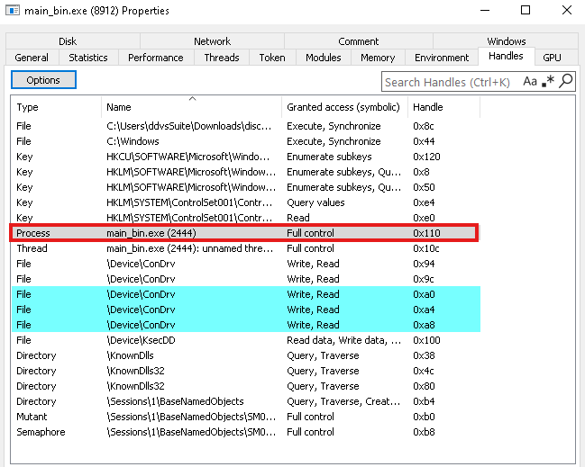
The next breakpoint is reached at WriteProcessMemory. At this stage, the malware writes the decrypted payload into the memory region that was previously allocated in the remote process using VirtualAllocEx.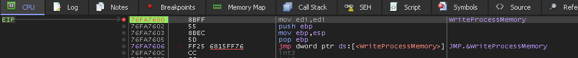
As done previously, it is possible to observe some important parameters on the stack that are passed as input to WriteProcessMemory. The first parameter is the process handle, identified by the value 0x110, which corresponds to the child process previously created in a suspended state. The third parameter, 0xB50000, represents a pointer to the buffer that contains the malicious payload to be written into the address space of the specified process.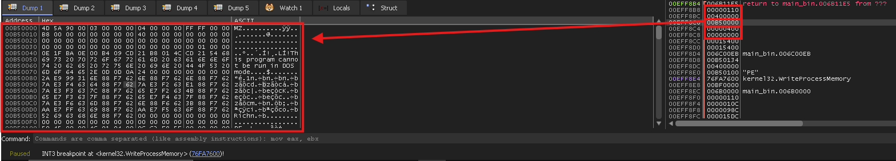
Now that we have found the location where the second stage resides, we can simply right-click on the base address in the memory map (0xB50000), select "Follow in Memory Map", and then extract the memory dump as a file.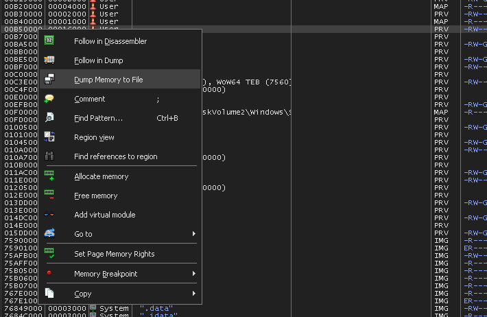
Reversing Second Stage
Opening the dumped file in IDA, this is the graph view that we obtain.
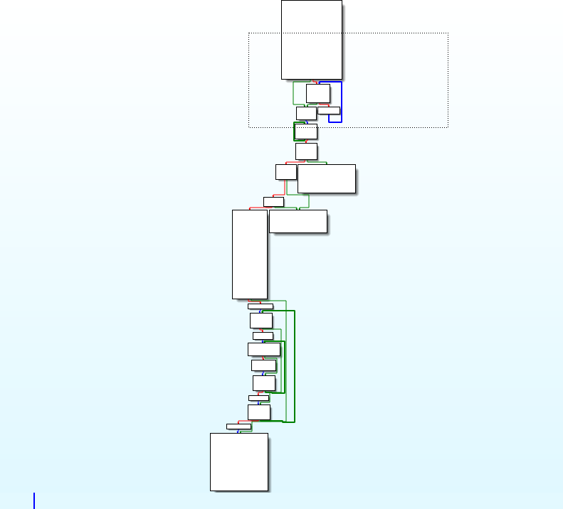
One interesting function that can be identified almost immediately is sub_401210, which in this case takes the value 0x8436F795 as input.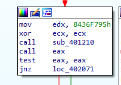
Inside this function, there is first a call to LoadLibrary, followed by a call to GetModuleHandle. This indicates that the sample is trying to load a function, most likely corresponding to the encrypted string passed as input. Between these two calls, there is also an interesting call to sub_401660.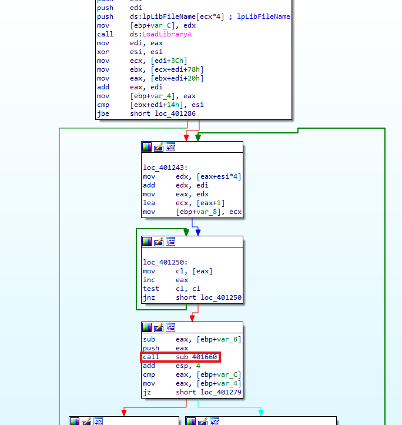
By analyzing this function, it is possible to notice that a sort of RC4-like decryption is performed. In fact, there is a loop that iterates 0x100 times.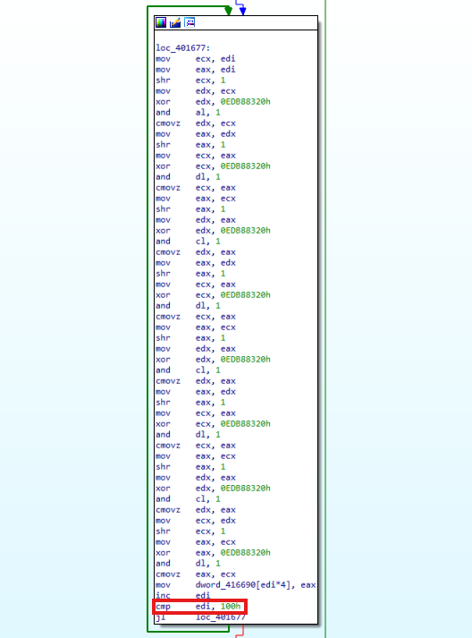
There are two possible ways to obtain the corresponding string. The first option is to perform debugging and stop at the parameter of GetModuleHandle that contains the decrypted function name. The second option is to use an automated tool to recover the string directly. This tool was written by 0x0d4y to help malware analysts. Using the tool, we obtain that the encrypted string corresponds to IsDebuggerPresent.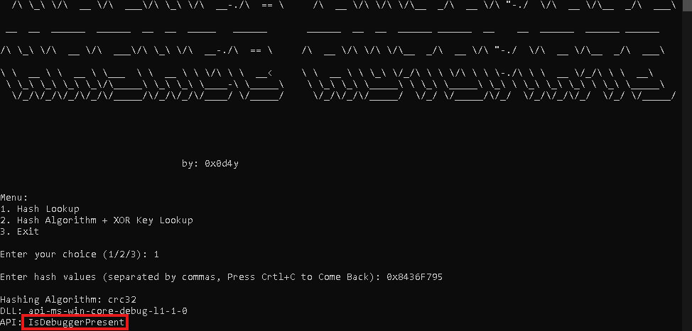
Another interesting part is the following. The sample compares eax with the value 0xB925C42D, which corresponds to svchost.exe. If the two values are not equal, the code takes the left branch; otherwise, it takes the right branch.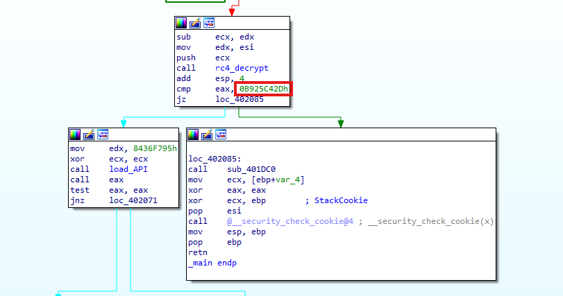
Analyzing left branch
By following the left branch, we encounter the function sub_401210 (renamed load_API) that load IsDebuggerPresent and then
it calls that function with call eax. We can see this in the previous figure.
After that, we encounter the function sub_401D50. As shown in the image below, this function takes several hash values and passes them to
sub_401210, which, as we saw previously, is responsible for decrypting the hash and loading the corresponding function using GetModuleHandle.
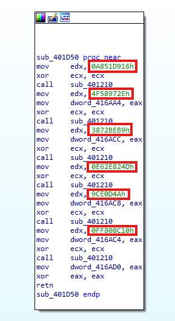
By using the previously mentioned tool, it is possible to decrypt all the hash values and recover the corresponding API names.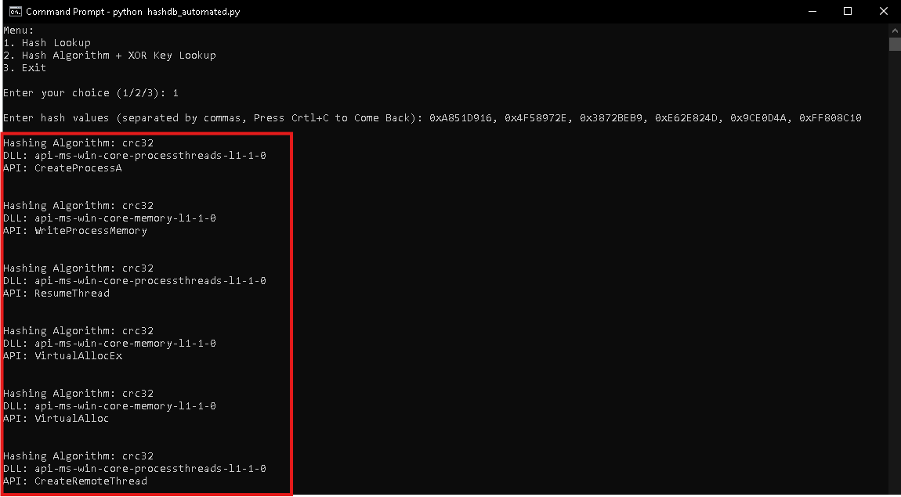
We can now rename all the dword variables in sub_401D50 using the names of the decrypted functions, in order to make the code easier to understand during the analysis.Continuing the analysis, we encounter the function sub_401CA0. As shown in the figure below, this function retrieves two values located in the .rdata section at the addresses 0x413C5C and 0x413C6C.
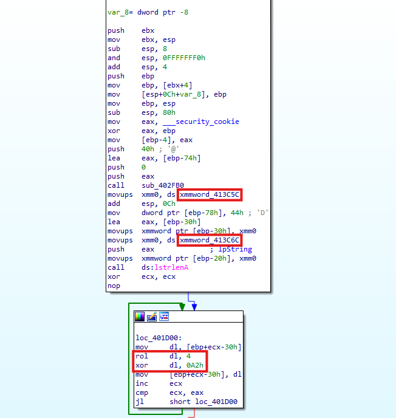
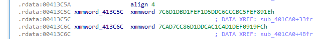
It can be observed, in the figure below, that these values are stored in ebp-30h and ebp-20h. After that, the ecx register is set to zero (using xor operation). Immediately below, there is a loop that iterates through the entire character array, using ecx as the index to move forward. During each iteration, two operations are performed on the characters: first a ROL (rotate left) by 4 bits, and then an XOR with the key 0xA2.By using CyberChef and inserting the concatenated string stored in the .rdata section (remember that the string must be inserted in little endian, since this is how it is stored in memory), and then applying the reverse operations, we can recover the original string: C:\Windows\System32\svchost.exe. Indeed, immediately below we can see a call to dword_416AA4, and it is possible to notice a structure identical to the call used for CreateProcessA. In fact, the parameters passed include the decrypted string obtained earlier and the value 0x4, which corresponds to the CREATE_SUSPENDED flag. However, by using the renaming function, we can see that this dword corresponds exactly to CreateProcessA. This indicates that the malware is creating the process C:\Windows\System32\svchost.exe in a suspended state. Now, returning to the calling function, we can notice that the code becomes much easier to understand. First, there is a call to VirtualAlloc, where memory is allocated in the current process starting from the address pointed to by ebp+50h, reserving 0x1000 bytes of space. After that, there is a call to VirtualAllocEx, where the sample allocates memory inside svchost.exe with the protection flag 0x40, which corresponds to PAGE_EXECUTE_READWRITE. Next, the sample calls WriteProcessMemory, passing the handle of the victim process (svchost.exe), the base address of the payload to be written, and the size of the payload, which is stored at eax+50h. Finally, the sample calls CreateRemoteThread, passing sub_401DC0 as the start routine address. This means that the injected payload inside svchost.exe will begin execution from a new thread created inside the process, which runs the function sub_401DC0 within the remote process. By analyzing sub_401DC0, we can observe that several hashed strings are decrypted again, and as shown in the command prompt on the right, we can obtain the corresponding plaintext strings. Notice that the second and third values are incorrect. The correct values correspond to InternetOpenUrlA and InternetReadFile.
After that, the same operation previously observed in sub_401CA0 is performed. Three encrypted strings are taken from the .rdata section at the addresses 0x413C7C, 0x413C8C and 0x413C9C. These values are stored respectively in ebp-40h, ebp-30h and ebp-20h. Next, a loop iterates over the entire concatenated string, and two operations are applied to each byte: first a ROL (rotate left) by 4 bits, and then an XOR with the key 0xC5. By applying the same procedure in CyberChef, we can recover the decrypted string. The result is the following URL: https://pastebin.com/raw/mLem9DGk. By visiting the decrypted URL, we can observe that it contains another URL, which is used to download a .png file. Analyzing the image using HxD tool, we can notice the string redaolurc which is cruloader backwords followed by possible encrypted bytes. After that, we encounter the function sub_401290, which takes the previously decrypted URL as input. Inside this function, we can observe a call to VirtualAlloc with a protection value of 0x4. Next, there is a call to InternetOpenA, where the User-Agent string used by the function is "cruloader". After that, InternetOpenUrlA is called, which receives the previously decrypted URL as input. Then we encounter the value 0x2B53DA6, which is another hash value corresponding to the function HttpQueryInfoA. After that, there is a call to VirtualAlloc followed by a call to InternetReadFile. This piece of code simply connects to the decrypted URL, downloads the .png file, and stores the downloaded bytes in the previously allocated memory region.
Analyzing right branch